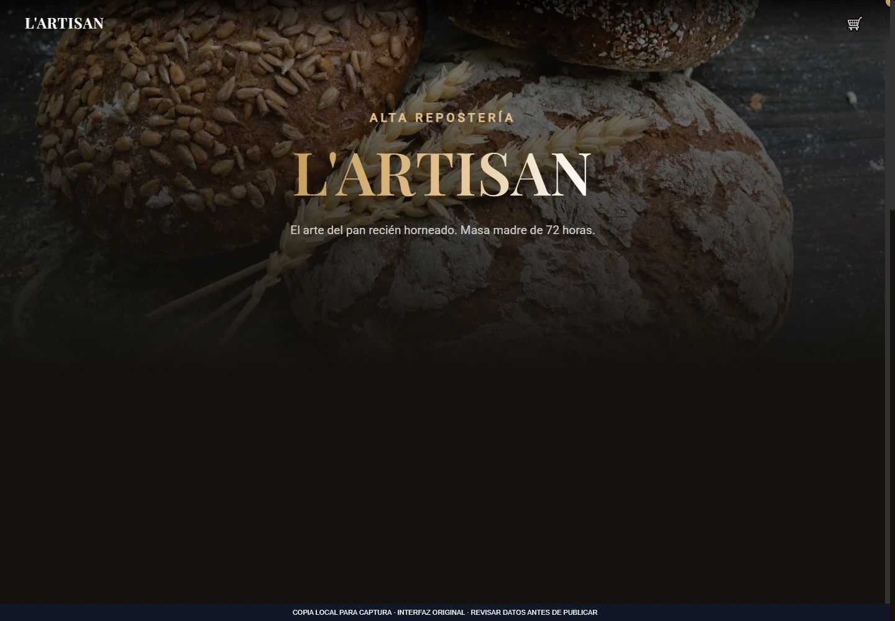
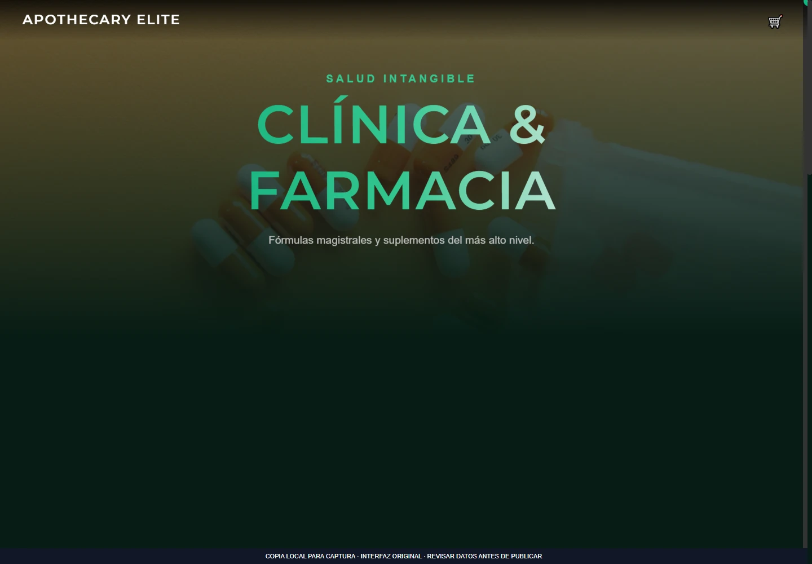
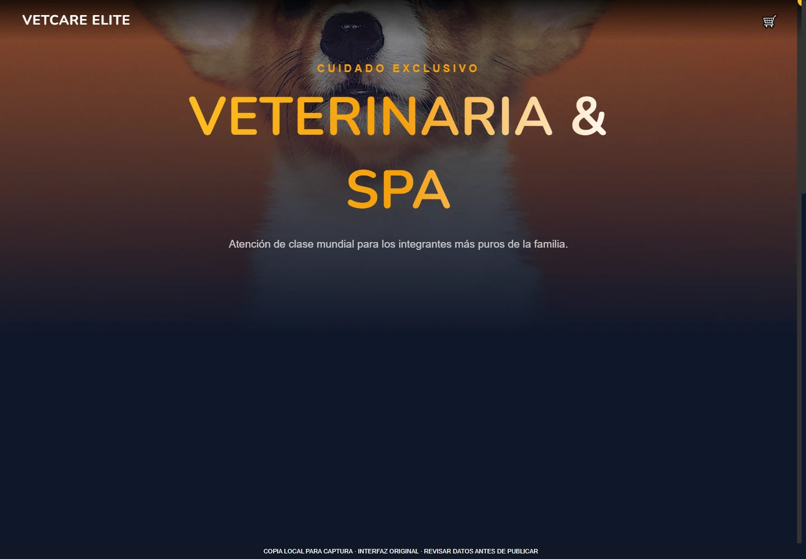

Aplicaciones web
DemoCatálogos web para comercios
Colección de interfaces comerciales para mueblería, panadería, farmacia, veterinaria y carnicería.
Qué resuelve
Colección de interfaces comerciales para mueblería, panadería, farmacia, veterinaria y carnicería.
Funciones implementadas
- Páginas temáticas para cinco sectores
- Carrito con altas y eliminación
- Persistencia del carrito en el navegador
- Diseño con animaciones de aparición
Demostración pública no disponible. Puedes consultar el alcance o solicitar una presentación.
Consultar sobre este proyecto ↗VISTA DEL PROYECTO
Fotografías y capturas · 3
Selecciona una imagen para ampliarla. Usa las flechas para recorrer la galería.


Ampliar ↗

Ampliar ↗

Ampliar ↗EN LA PRÁCTICA
Exploración de un catálogo
- 1
Elegir uno de los sectores comerciales.
- 2
Añadir productos al carrito.
- 3
Revisar el total y probar la finalización visual.
La finalización es una simulación local; no hay pasarela de pago.
Probar ejemplo de uso ↗Añadir fotos a este proyecto ↗
Abre primero el gestor local con python tools/manage_media.py.